by Crumb
Available for digital download and on cassette
"BONES" OFFICAL VIDEO
Upcoming Shows
February 24th @ Tufts University (Boston)
March 10th @ Silent Barn (Brooklyn)
March 11th @ The Meat Shop (The Bronx)
April 15th @ Space Camp (Syracuse)
April 20th @ All Night Diner (Philly)
April 21st @ Haverford College (Philly)
PRESS
(:
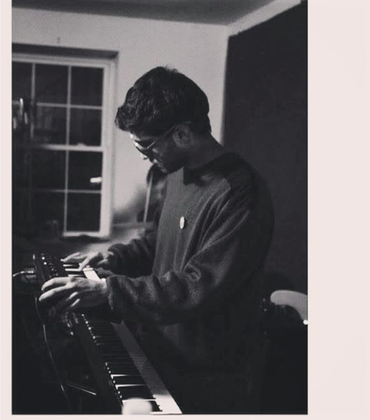 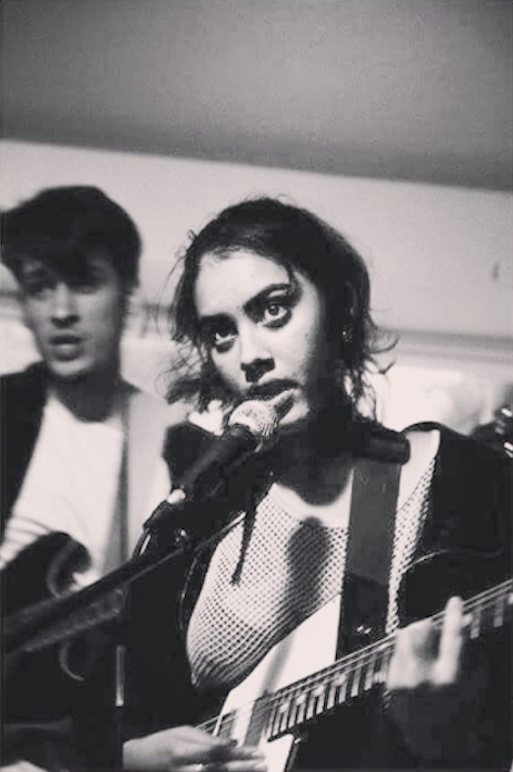 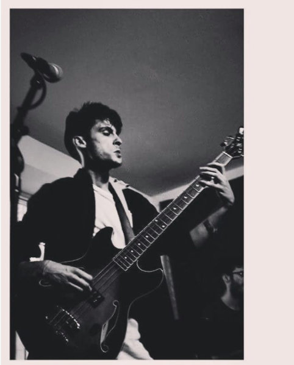 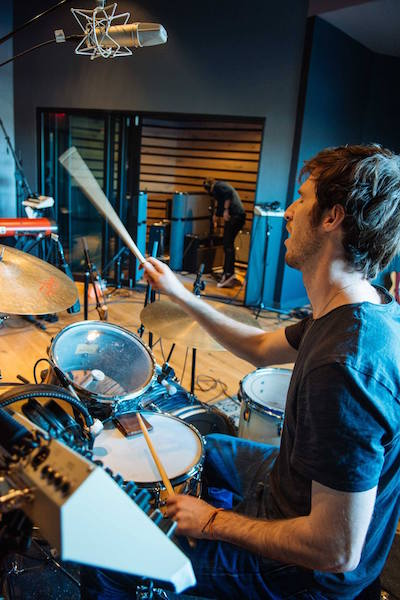 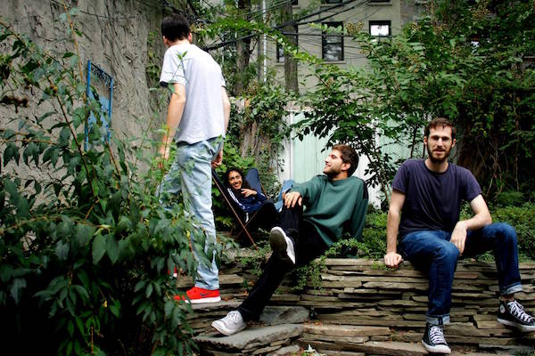 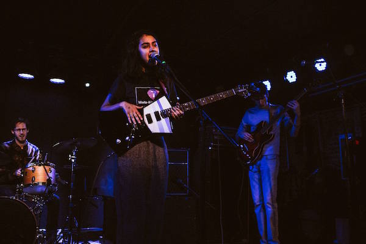 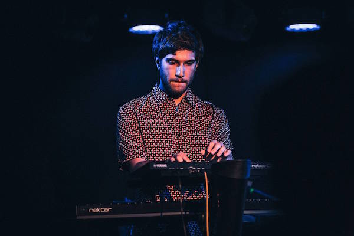 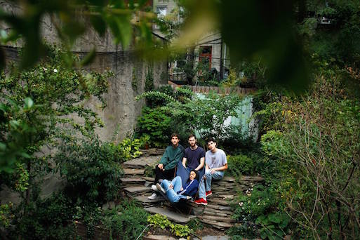 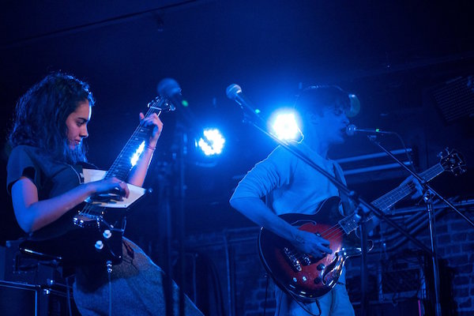 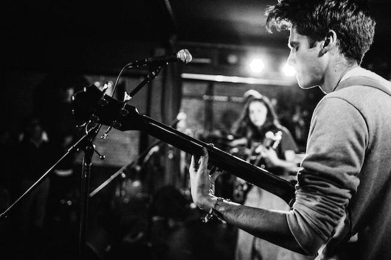 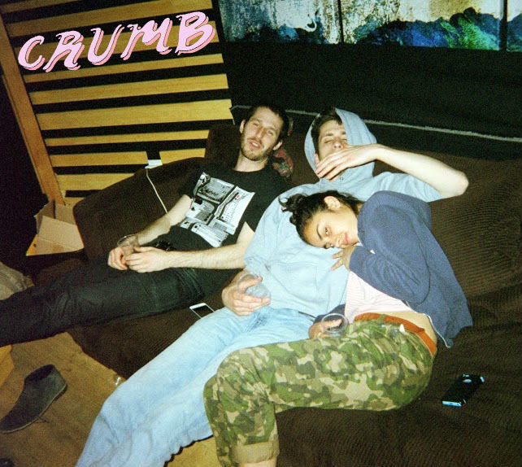 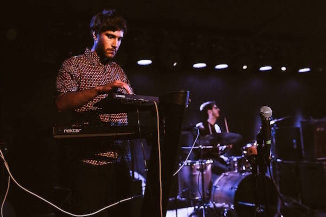 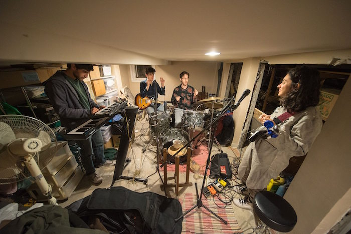 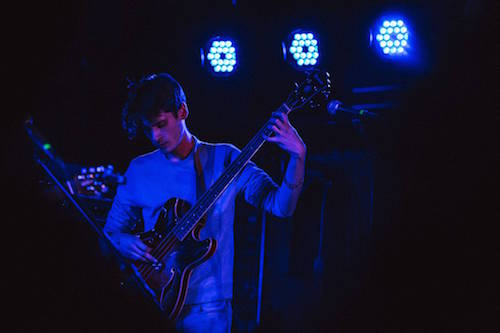 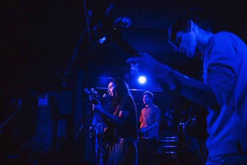 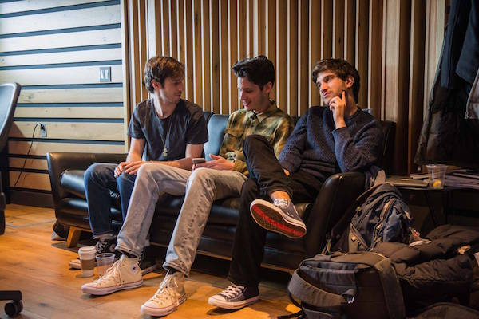 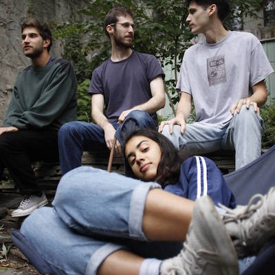Crumb is a collaboration between four friends (Lila Ramani - singer/guitarist, Jesse Brotter - bass, Jonathan Gilad - drums, Brian Aronow - keys/synth/saxophone). Currently based in Brooklyn, Crumb released their debut self-titled 12-minute EP in September 2016, and has since enjoyed a series of performances throughout the northeast. Their sound combines soulful and dreamy melodies with a psychedelic pulse to create a unique sound that falls somewhere in between the lines of rock, jazz, and soul. After gaining massive exposure via Reddit, the self-titled EP quickly and organically received widespread attention from blogs and listeners alike—the group was awarded New England artist of the month by The Deli Magazine in November and was listed at #19 in Allston Pudding’s top 30 EP’s of 2016. The group is currently working on their second EP and a music video, both of which they plan to release in late spring. They are also planning a 2017 summer tour throughout the US.